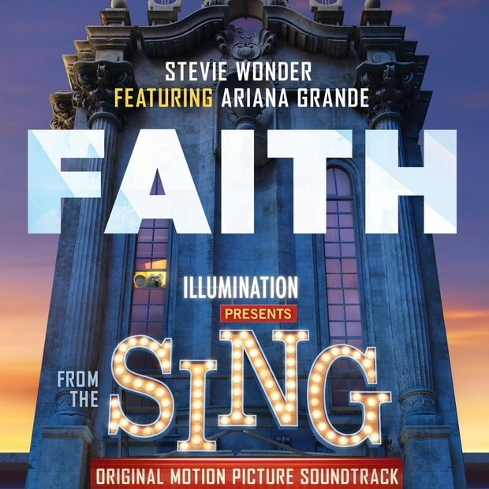
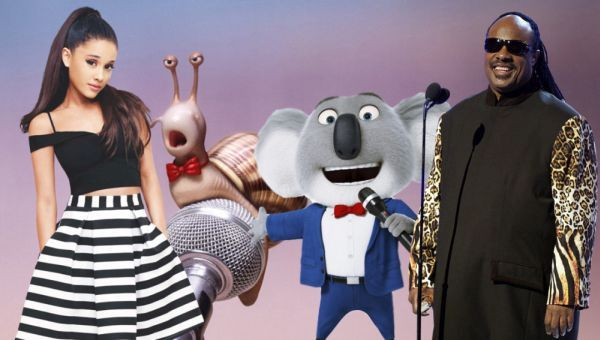

Movies and others
SING!: Faith

2016
Sing! Is an animated film directed by Chris Meledandri, known for hits such as "The Secret Life of Pets", "Minions" and "Despicable Me". A film what develop in a world like ours, but populated only by animals, where winning a music contest similar to The Voice, is the dream of the participants.
Within the soundtrack we can find the song written by Francis Farewell Starlite, Ryan Tedder and Stevie Wonder, under the production of Ryan Tedder and Benny Blanco titled "Faith". A funky style song interpreted by Stevie Wonder and the accompanied of Ariana Grande and which was nominated for Best Original Song at the Golden Globes Awards. In the soundtrack we can also find to Tori Kelly playing a song composed for Stevie Wonder, "Don't You Worry 'Bout A Thing".

Faith - Stevie Wonder & Ariana Grande
[Stevie Wonder:]
See the girl with the diamonds and the shoes? Yeah
She walks around like she's got nothin' to lose
Yes she's a go-getter, she's everybody's type
She's a queen of the city but she don't believe the hype
She's got her own elevation, holy motivation
'Til I wrote some letters on big bold signs
[Stevie Wonder & Ariana Grande:]
I got faith in you baby, I got faith in you now
And you've been such a, such a good friend of me
Know that I love you somehow
I met you, hallelujah, I got faith
[Ariana Grande:]
See the boy with the Stevie Wonder swag?
Ain't gotta cup all the magic that he has
He's a go-getter, he's everybody's type
I'mma make it my mission, make him feel alright
He's a twelve on a ten point, rockin' out to his joint
Just say the word 'cause I can sing all night
[Stevie Wonder & Ariana Grande:]
I got faith in you baby, I got faith in you now
And you've been such a, such a good friend of me
Know that I love you somehow (love you somehow)
I met you, hallelujah, I got faith
Faith, yeah
Yes I do, mmm
I get it runnin' and my mind goes crazy
I think about you mornin', noon, night and day
I get it runnin' and my mind goes crazy
I think about you mornin', noon, night and day
I get it runnin' and my mind goes crazy
I think about you mornin', noon, night and day
I got faith in you honey, I got faith in you girl
I met you, hallelujah
I got faith in you baby, I got faith in you now
And you've been such a, such a good friend of me
Know that I love you somehow (love you somehow)
I met you, hallelujah, I got faith
(Faith, faith, baby)
I got faith in you baby, I got faith in you now
And you've been such a, such a good friend of me
Know that I love you somehow
I met you, hallelujah, I met you, hallelujah
I met you, hallelujah, I got faith

Don't You Worry 'Bout A Thing - Tori Kelly